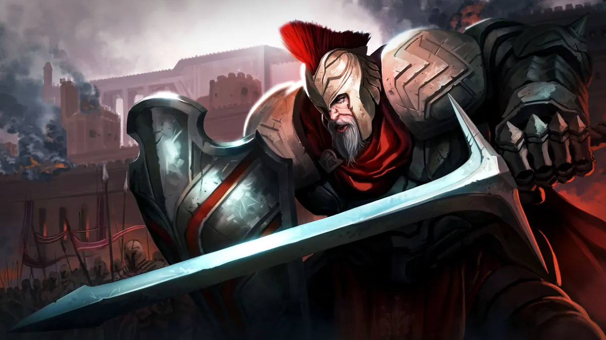
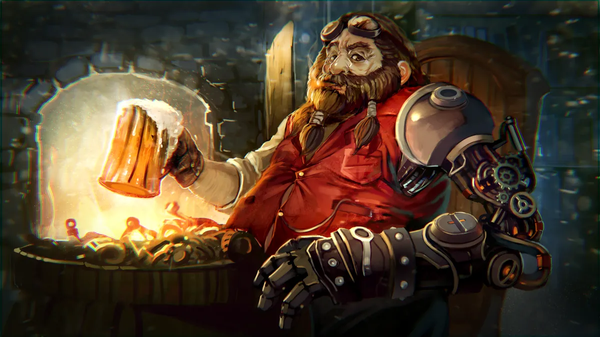
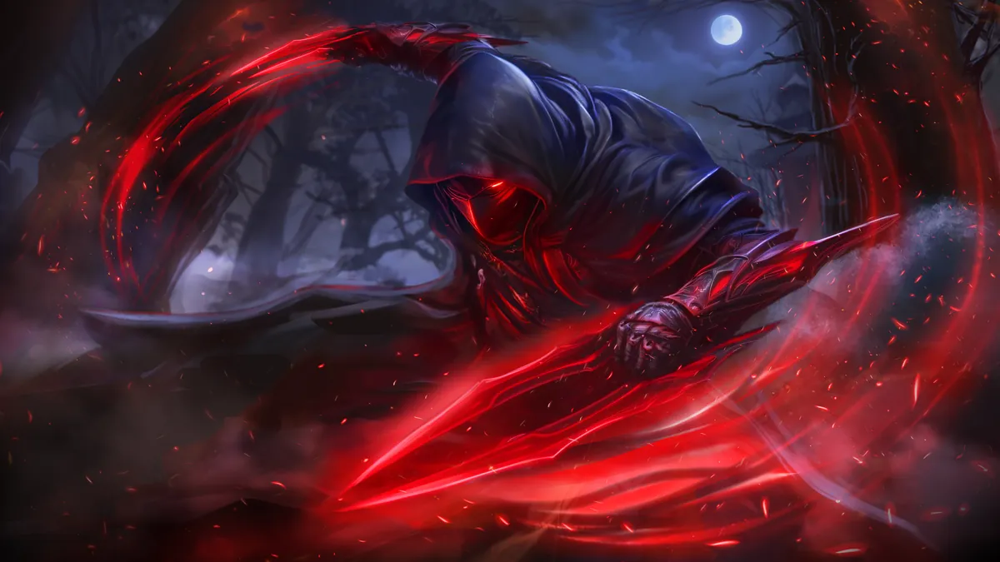
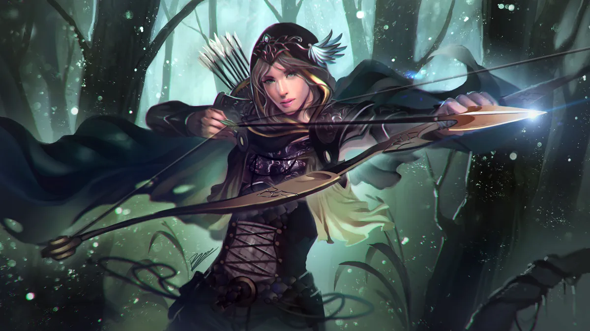

--
-- games played
Beta Analytics
Real numbers from matches played in the Atlas Conquest beta and playtests: who’s winning, what’s being played and how the meta is shifting. Refreshed daily.
Headline numbers for the selected window: Last 3 months · all maps.
Based on -- games where turn order is known (recorded, or inferred from the mulligan).
Every commander ranked by winrate. Fewer than 20 games is too few to rank fairly, so those commanders sit at the bottom, dimmed.
Game length, turns and actions per game for the selected window.
Dig into any corner of the beta.

Winrates · Deck building Commanders How every commander performs, how long their games run and how their decks are built.
Draw · Play · Win Cards Inclusion, draw and play rates for every card, with optional mulligan and post-match feedback stats.
Matchups · Trends Meta Head-to-head heatmap and how popularity shifts week to week. Archetypes Metagame Deck archetypes found from cards that keep appearing together.
Art · Animation Goals Progress toward the human-made art and animation targets.